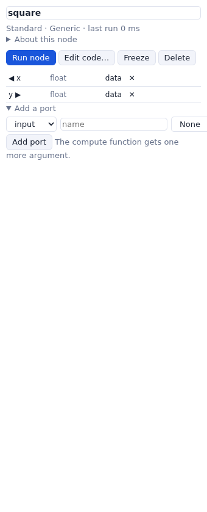

Writing your own nodes
A node is a Python function with ports. Make one in the page from a Generic node, or write a library of them.
The compute function
Every node runs a function named doit. Its arguments are the node itself, then its
input ports, in order; it sends results with self.outputData:
def doit(self, x, k):
self.outputData(y=x * k) # the value goes out of output port y
- An optional input that got no data gives
None. - Returning
'Stop'stops the data there: the nodes below do not run in this pass. - What the function prints goes to the Log; an exception marks the node as failed and shows its traceback in the parameter column.
- The function runs on the server, in the network's folder (relative file names are in that folder), with your rights. It can import any module of the server's Python.
A node in the page
- Drag a Generic node (Standard > Input): a node with no ports.
- Rename it in the parameter column (the name field at the top).
- Open Add a port: choose input or output, a name (a Python identifier), a type, and for an input whether it has a widget (a thumbwheel for numbers, a check button for booleans, an entry otherwise). The compute function gets one more argument for each input.
- Write the code: double-click the node, or Edit code…, and Save and run.

x,
an output y, and the code self.outputData(y=x * x).The node, its ports and its code are saved with the network. Any node's code can be changed the same way, and its ports deleted with ✕ in the parameter column.
A library of nodes
To use a node in many networks, write it in a library: a Python file that defines node classes and
a NodeLibrary. The node classes use Vision's API: inputPortsDescr,
outputPortsDescr, widgetDescr and setFunction.
from wewos.engine import NodeLibrary, NetworkNode
class Square(NetworkNode):
"""The square of a number."""
def __init__(self, name='square', **kw):
kw['name'] = name
NetworkNode.__init__(self, **kw)
self.inputPortsDescr.append(datatype='float', name='x')
self.widgetDescr['x'] = {'class': 'NEThumbWheel', 'master': 'node',
'initialValue': 2.0, 'labelCfg': {'text': 'x'}}
self.outputPortsDescr.append(datatype='float', name='y')
self.setFunction("""def doit(self, x):
self.outputData(y=x * x)
""")
mylib = NodeLibrary('My nodes', '#d08770')
mylib.addNode(Square, 'square', 'Numbers') # class, label in the list, category
Load it with Libraries…: type the file's path (or a module name, if it is on the server's Python path) and press Load. Its nodes appear in the list under My nodes, and it is loaded again at the next start. A network that uses its nodes loads it when it opens.
Widgets
| class | widget |
|---|---|
NEThumbWheel, NEDial | a number ('type': 'int' or
'float'; 'min', 'max', 'increment', 'oneTurn') |
NEEntry | a text |
NECheckButton | a check box |
NEComboBox | a menu ('choices') |
NEEntryWithFileBrowser, NEEntryWithDirectoryBrowser | a file or folder on the server |
NEVectorGUI | a 3D vector |
NEColorMap | a color map editor |
'master': 'node' shows the widget in the node; 'ParamPanel' only in the
parameter column. The nodes of wewos/libs/*.py are examples of all of these.